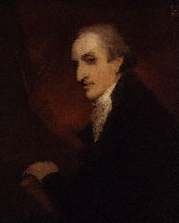
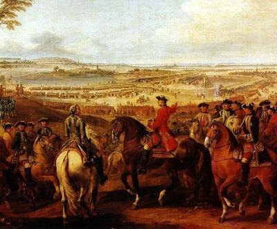

Three songs to the tune of "Up an' waur them a', Willie!"
Trois chants sur l'air de "Cours les avertir, Willie!"
|
The tune and lyrics of the song on the Battle of Sherrifmuir (13 Novembre 1715)
"Up an' waur them a'"
inspired the following three songs:
- "The Election Ballad for Westerhall" (verses by Robert Burns circulated as "broadside" ) referring to local elections in 1789, and - "Up an rin awa,Willie", an incitement to revenge against Cumberland (1746), published in 1821 by Hogg in his "Jacobites Relics", Volume II, N°91 - "The Battle of Val", a satirical song on Cumberland's career after Culloden, published in 1821 by Hogg in his "Jacobites Relics", Volume II, N°102 |
La mélodie et les paroles du chant sur la bataille de Sherrifmuir (13 Novembre 1715)
"Up an' waur them a'"
inspira les trois chants qu suivent:
- "The Election Ballad for Westerhall" un poème de Robert Burns qui cirula sous forme de "broadside" et qui a trait à des élections locales en 1789, et - "Up an rin awa,Willie", une incitation à se venger de Cumberland après Culloden (1746), publiée en 1821 par Hogg dans ses "Jacobites Relics", Volume II, N°91 - "La bataille de Val", chant satirique sur la carrière de Cumberland après Culloden, publié en 1821 par Hogg dans ses "Jacobites Relics", Volume II, N°102 |
1° Election Ballad for Westerhall
Ballade électorale de Westerhall
A Jacobite reminiscence by Robert Burns
Tune - Mélodie
Sequenced by Christian Souchon


|
UP AND WAUN THEM A', JAMIE
1. The Laddies by the banks o Nith (7) Wad trust his Grace(2) wi a' Jamie;(1) But he'll sair them, as he sair'd the King(3)- Turn tail and rin awa, Jamie. Chorus: Up and waun them a'Jamie, Up and waun them a'! The Johnstones(1) hae the guidin o't: Ye turncoat Whigs, awa!(4) 2. The day he stude his country's friend, Or gied her faes a claw, Jamie, Or frae puir man a blessin wan- That day the Duke(2) ne'er saw, Jamie. 3. But wha is he, his country's boast? Like him there is na twa, Jamie! There's no a callant tents the kye, But kens o Westerha'(1), Jamie. 4. To end the wark, here's Whistlebirk-(6) Lang may his whistle blae, Jamie! And Maxwell(5) true, o sterling blue (8); And we'll be Johnstones a', Jamie. |
VIENS-T-EN LES CHASSER, JAMIE!
1. Aux gaillards sur les bords du Nith(7) Partisans de Sa Grace(2), Jamie;(1) Il fera ce qu'il fit au Roi-(3) Quand il quitta la place, Jamie. Refrain: Viens t'en les chasser, Jamie, Viens, montre-toi leste! C'est Johnston(1) qui doit l'emporter: Non les Whigs tourne-vestes!(4) 2. Venir en aide à son pays, Gifler ses adversaires, Jamie, Ou par le pauvre être béni- Le Duc(2) n'en a que faire, Jamie. 3. De qui donc est-on fier ici? D'un champion sans égal! Jamie! Le moindre garçon d'écurie, Le sait: c'est Westerhall!(1) Jamie. 4. Et Whistlebirk(6) manquait encore!- Il peut siffler sans cesse! Jamie! Maxwell (5), d'un bleu franc comme l'or;(8) Te ralliera le reste, Jamie. (Trad. Christian Souchon(c)2010) |
|
Note:
This "election ballad" contains some Jacobite reminiscences:
At the 1789 election of the representative of the Dumfries Burghs in Parliament, the contest was between:
Robert Maxwell (5) (died 1792) was Provost of Lochmaben. Burns described Maxwell as: 'one of the soundest headed, best hearted, whisky drinking fellows in the south of Scotland.'
Birtwhistle
,(6) Alexander was a Kircudbright merchant, and Provost of the Burgh. He is supposed to have carried on a substantial foreign trade from the town.
|
Note:
Cette "ballade électorale" contient certaines réminiscences jacobites:
Lors de l'élection de 1789 du représentant des bourgs de Dumfries au parlement, 2candidats étaient en lice:
Robert Maxwell (5) (mort en 1792) était Prévot de Lochmaben, Dumfriesshire. Burns décrivit Maxwell comme: 'l'un des plus redoutables et des plus sympathiques buveurs de whisky du Sud de l'Ecosse.' Birtwhistle ,(6) Alexandre était marchand à Kircudbright et Prévot de ce bourg. On le soupçonnait d'avoir tiré des profits substantiels au détriment de la municipalité de son commerce avec l'étranger.( 'Whistle' veut dire 'sifflet', d'où le jeu de mots) Des bandes de Frontaliers en uniforme,(7) partisans notoires de Patrick Miller, chevauchant leurs montures, se réunirent à Dumfries le matin des élections pour en influencer l'issue. Johnston, s'avança courageusement à leur rencontre et les interpella: - "Je vous donne une demi-heure pour décamper, sinon je sors le drapeau bleu!" (le drapeau écossais - remplacé par l'Union Jack) (8). En quelques minutes, tous les dragons avaient disparu. |
2° Up an' rin awa, Willie
Debout et va-t-en, Willie
Incitement to revenge after Culloden
from The True Loyalist" , page 97, 1779 andHogg's "Jacobite Relics", Volume II, N°91 page 177, 1821
(Only slight differences)
|
UP AN' RIN AWA, WILLIE
1. Up and rin awa, Willie (*), Up and rin awa, Willie; The Highland clans will rise again, And chase you far awa, Willie. Prince Charlie he'll be down again, With clans both great and sma', Willie, To play your king a bonny spring, And make you pay for a', Willie. Up and rin awa, &c. 2. Therefore give o'er to burn and slay, And ruin send on a', Willie, Or you may get your butcher horns Your own dirge for to blaw, Willie. Up and rin awa, &c. 3. For had the clans been in your way, As they were far awa, Willie, They'd chas'd you faster aff the field Than ever wind did blaw, Willie. Up and rin awa, &c. 4. You may thank God for evermore, That deil a clan you saw, Willie, Wi' pistol, durk, or edge claymore, Your loggerhead to claw, Willie. Up and rin awa, &c. 5. Then take my last and best advice. Pack bag and baggage a', Wilie, To Hanover, if you be wise, Take Feck and George (**) and a', Willie. Up and rin awa, &c. 6. There's one thing I'd almost forgot, Perhaps there may be twa, Willie : Be sure to write us back again, How they received you a', Willie. Up and rin awa, Willie, Up and rin awa, Willie; The Highland clans will rise again, And chase you far awa, Willie. (*) Willie= William Duke of Cumberland (**) Feck and George: Prince of Wales, Frederick and king George II. Source: "The Jacobite Relics of Scotland, being the Songs, Airs and Legends of the Adherents to the House of Stuart" collected by James Hogg, volume II published in Edinburgh by William Blackwood in 1821. |
DEBOUT ET VA-T-EN, WILLIE
1. Debout et va-t-en, Willie (*), Debout et va-t-en; Les clans vont se lever encor Et te jeter dehors. Le Prince Charles reviendra Aidé de tous les clans. Il va faire danser ton roi Et nous venger de toi. Debout et va-t-en... 2. Cesse d'incendier et de tuer Et de semer l'effroi. Ou que tes cornes de boucher Sonnent le glas pour toi. Debout et va-t-en... 3. Si les clans t'avaient rencontré Quand ils étaient au loin Ils t'auraient plus vite chassé Que le vent, c'est certain. Debout et va-t-en... 4. Tu peux remercier le Ciel De n'avoir jamais vu Un clan en panoplie complète Qui te tapes dessus. Debout et va-t-en... 5. Suis mon conseil et plie bagage: Hanovre se languit De te revoir: c'est le plus sage. Prends Feck et George aussi Debout et va-t-en... 5. J'oubliais encore une chose - Ou deux, je ne sais plus- Fais-nous donc savoir, et sans faute, S'ils vous ont bien reçus. Debout et va-t-en, Willie, Debout et va-t-en; Les clans vont se lever encor Et te jeter dehors. (*) Willie= William Duke of Cumberland (**) Feck et George: le prince de Galles, Frédéric et le roi Georges II. (Trad. Christian Souchon(c)2010) |
3° The Battle of Val
La bataille de Lawfeld
Cumberland's career after Culloden
from Hogg's "Jacobite Relics", Volume II, N°102 page 196, 1821
|
THE BATTLE OF VAL [1]
CHORUS: Up and rin awa, Willie, Up and rin awa, Willie; Culloden's laurels you have lost, Your puffd-up looks, and a'! 1. This check o' conscience for your sins, It stings you to the saul, And breaks your measures this campaign, As much as Lowendahl, Up and rin awa, &c. 2. Whene'er great Saxe your troops attack'd, About the village Val, To scour awa you was not slack, For fear you got a ball, Up and rin awa, &c. 3. In just reward for their misdeeds, Your butchers gat a fa'; And a' that liv'd ran aff wi' speed To Maestricht's strong wa', Up and rin awa, &c. 4. Baith Scott and Lockhart's sent to hell, [2] For to acquaint mamma, That shortly you'll be there yoursel, To toast ayont them a', Up and rin awa, &c. 5. The Maese you cross'd just like a thief, To feed on turnips raw, In place of our good Highland beef, With which you gorg'd your maw. Up and rin awa, &c. 6. To Hanover I pray begone, Your daddie's dirty sta', And look on that as your ain hame, And come na here at a'. It's best to bide awa, Willie, It's best to bide awa; For our brave prince will soon be back, Your loggerhead to claw. Source: "The Jacobite Relics of Scotland, being the Songs, Airs and Legends of the Adherents to the House of Stuart" collected by James Hogg, volume II published in Edinburgh by William Blackwood in 1821. |
 Marshal Maurice de Saxe at the Battle of Lauffeld |
LA BATAILLE DE LAWFELD [1]
REFRAIN: Debout et va-t-en, Willie, Debout et va-t-en! Plus de grands airs: ils sont flétris Tes lauriers de Culloden! 1. Pour tes péchés, à point nommé, Ce grave échec survient. Autant de mal que Lowendal! Tes plans sont mal en point. Debout et va-t-en, Willie... 2. Quand près de Val le Maréchal De Saxe te surprit, De peur de recevoir des balles, Toi, sans tarder, tu fuis. Debout et va-t-en, Willie... 3. Voilà payés de leurs forfaits Tes sbires et leurs triques. Sauve qui peut: vers la forte- resse de Maëstricht. Debout et va-t-en, Willie... 4. Scott et Lockhart vont en enfer [2] Prévenir ta maman Que bientôt tu les rejoindras Pour rôtir gentiment. Debout et va-t-en, Willie... 5. Ta bande honteuse franchit la Meuse Pour voler des navets Et vole un œuf faute de bœuf Des Highlands à bâfrer. Debout et va-t-en, Willie... 6. Allons, mon pauvre, pars pour Hanovre Ces écuries d'Augias C'est là ta place, parmi ta race, Surtout ne reviens pas! Ne reviens pas chez nous, Willie Ne reviens pas chez nous! Notre bon prince va rentrer Alors, prends garde aux coups! (Trad. Christian Souchon (c) 2010) |
|
[1]
Battle of Val
. In spite of Hogg's comment:
"I got this song among Miss Hollo's papers, but do not even know what battle is alluded to, if it was not that at Lafeld, before Maestricht, in which the duke of Cumberland is said to have exerted himself with courage" , the Battle of Lauffeld or Battle of Val is meant in this song. It was an episode of the war of Austrian Succession . The Battle was fought on 2nd July 1747. The French Forces under Marshal Maurice de Saxe defeated British- Hanoverian-Dutch combined forces under Cumberland and the Prince of Orange at Lauffeld near Masstricht. (cf. note to "Cumberland" in Culloden Harvest ). [2] Marshal Ulric-Frederick de Lowendal distinguished himself in that war at Berg-op-Zoom and Maastricht. [3] Lockhart : see "You're welcome Charlie Stuart!" , 3rd verse. |
[1]
Bataille de Val
: Malgré le commentaire de Hogg:
"Ce chant faisait partie d'un envoi de Miss Hollo. Je ne sais pas à quelle bataille il fait allusion. Il ne peut s'agir de Lawfeld, devant Maëstricht, où le duc de Cumberland s'est battu courageusement, dit-on", c'est bien de la bataille de Lawfeld (ou de Val) qu'il s'agit dans ce chant. C'était un épisode de la guerre de succession d'Autriche . La bataille eut lieu le 2 juillet 1747. Les troupes françaises, commandées par le maréchal Maurice de Saxe vainquirent les forces anglaises, hanovriennes et hollandaises réunie, commandées par le duc de Cumberland et le prince d'Orange à Lawfeld près de Maëstricht. (cf. note "Cumberland" sur la page Culloden Harvest ). [2] Le maréchal Ulric-Frédéric de Lowendal se distingua à Berg-op-Zoom et Maëstricht. [3] Lockhart : cf. "You're welcome Charlie Stuart!" , 3ème strophe. |
|
|
|